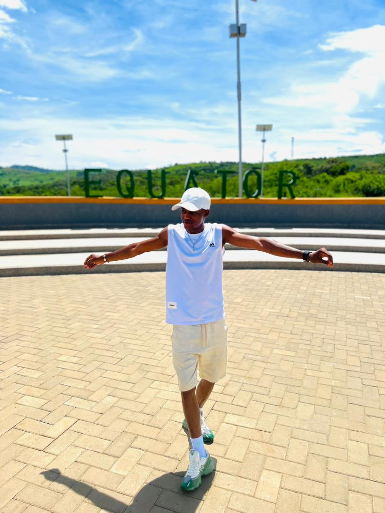
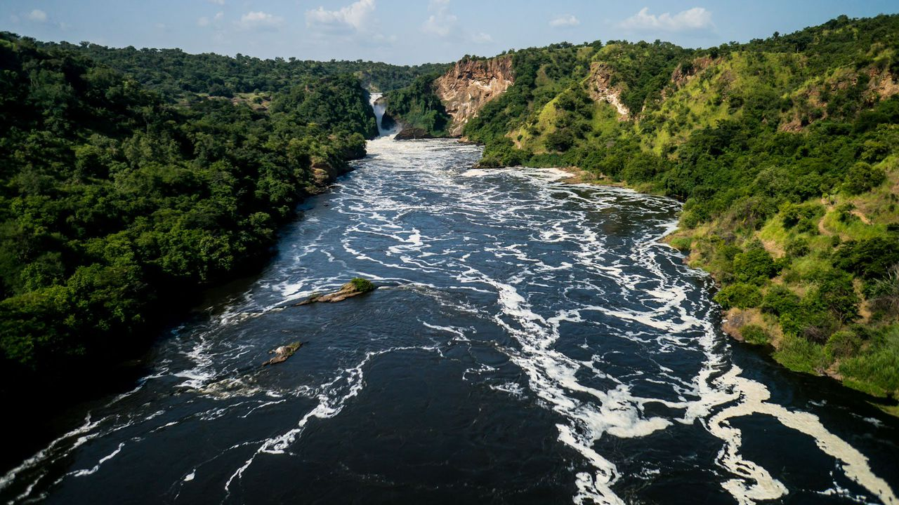

Expedition Portfolio
Uganda Tourism - Background & Wildlife
Welcome to my complete visual expedition! Each spot below showcases the breathtaking **background and scenery** of Uganda. As you explore, remember that these diverse ecosystems are home to some of the world's finest wildlife. In **Queen Elizabeth National Park**, look for **Tree-climbing Lions and Elephants**. We travel next to **Murchison Falls**, famous for its powerful waters and **Nile Crocodiles**. We also include the primate capitals of the **Budongo Forest** (Chimpanzees) and finish at the geographic landmark of the **Equator** and the unique **Rwenzori Mountains** landscapes.

